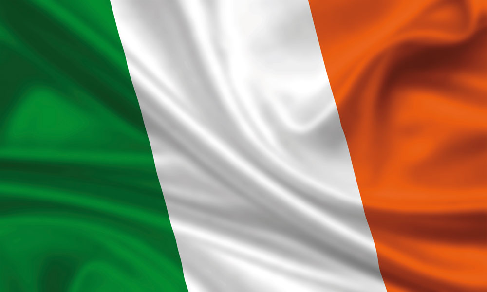

Ireland is an island in the North Atlantic. It is separated from Great Britain to its east by the North Channel, the Irish Sea, and St George's Channel. Ireland is the second-largest island of the British Isles, the third-largest in Europe, and the twentieth-largest on Earth.
Geopolitically, Ireland is divided between the Republic of Ireland (officially named Ireland), which covers five-sixths of the island, and Northern Ireland, which is part of the United Kingdom. In 2011, the population of Ireland was about 6.6 million, ranking it the second-most populous island in Europe after Great Britain. As of 2016, 4.8 million live in the Republic of Ireland, and 1.8 million live in Northern Ireland.
The geography of Ireland comprises relatively low-lying mountains surrounding a central plain, with several navigable rivers extending inland. Its lush vegetation is a product of its mild but changeable climate which is free of extremes in temperature. Much of Ireland was woodland until the end of the Middle Ages. Today, woodland makes up about 10% of the island, compared with a European average of over 33%, and most of it is non-native conifer plantations. There are twenty-six extant land mammal species native to Ireland. The Irish climate is influenced by the Atlantic Ocean and thus very moderate, and winters are milder than expected for such a northerly area, although summers are cooler than those in continental Europe. Rainfall and cloud cover are abundant.